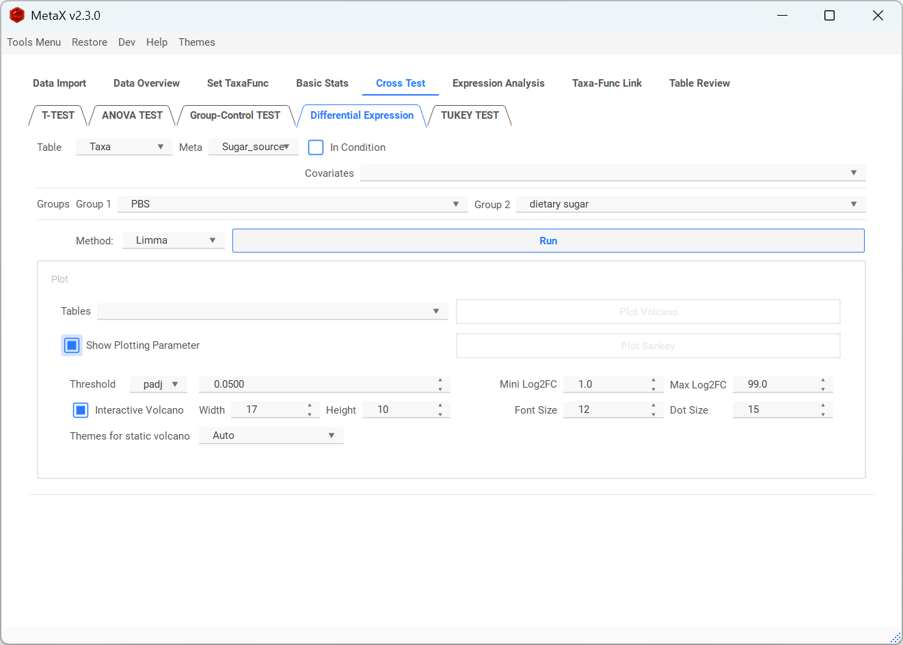
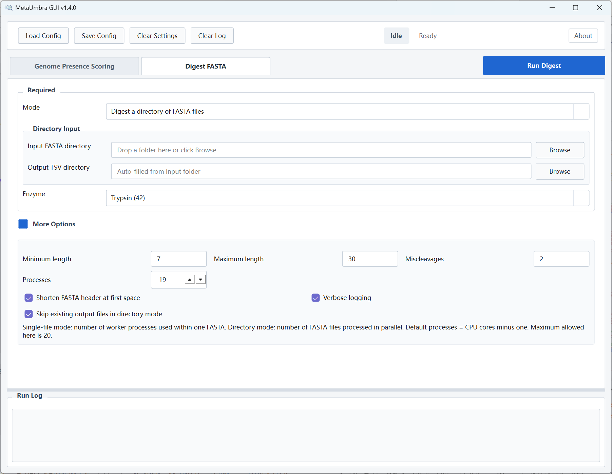
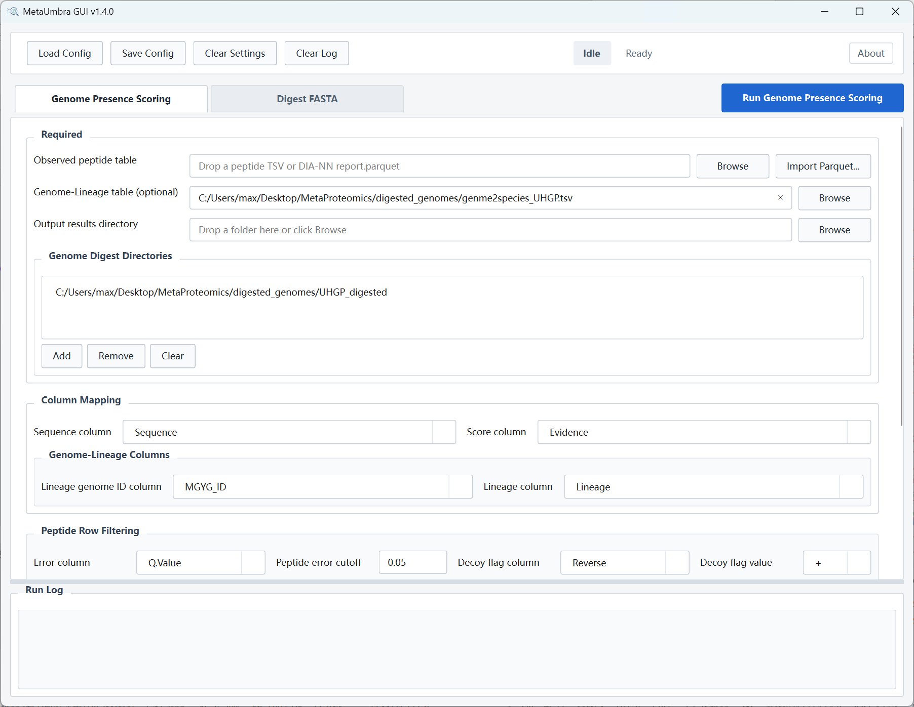
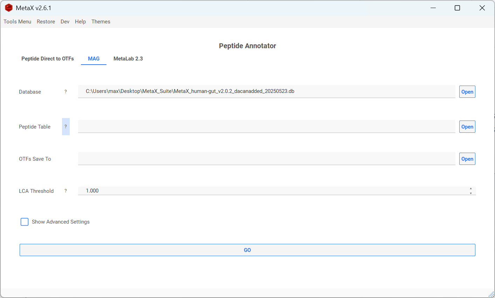
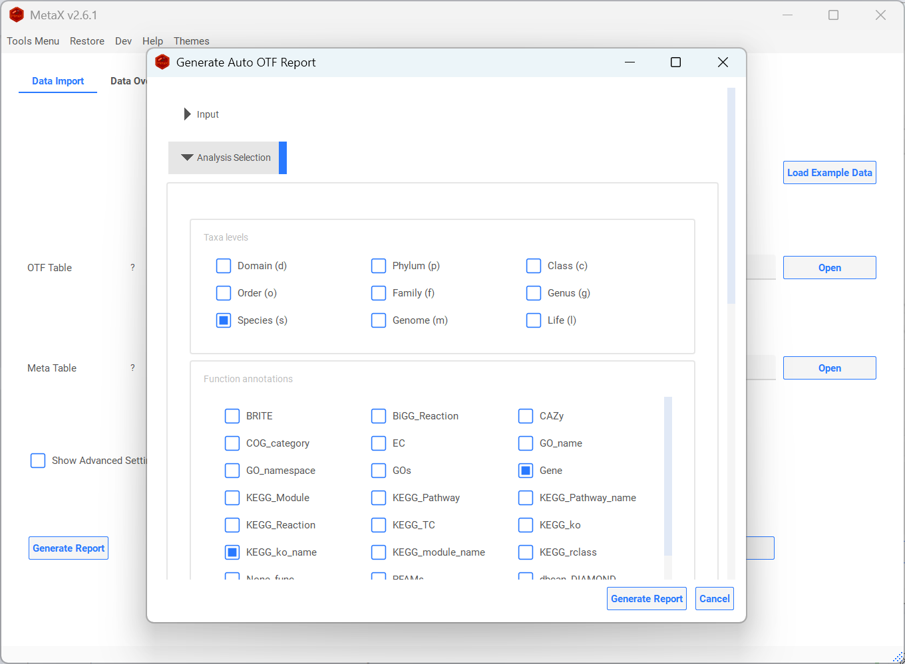

MetaX Cookbook
This cookbook is the practical user guide for the MetaX desktop application. It covers peptide-to-OTF annotation, OTF analysis, visualization, automated reports, and reproducible workflow export. Command-line workflows are introduced where they complement the GUI, with installation, annotation, reporting, database-building, and automation details collected in the MetaX CLI tab on the same deployed page.
Overview
MetaX links peptide sequences with taxonomic and functional information in metaproteomics. The Operational Taxon-Function (OTF) framework is designed to investigate “who is doing what and how” within microbial communities.
MetaX provides peptide annotation, quantitative summarization, statistical testing, visualization, automated HTML reports, and exportable analysis workflows for peptides, proteins, taxa, functions, and taxon-function associations.

Project resources: GitHub repository · MetaX CLI · Change log
Contents
- Getting Started
- Module 1. OTF Analyzer
- Module 2. Database Builder
- Module 3. Database Updater
- Module 4. Peptide Annotator
- Reporting and Reproducibility
- Application Tools
- Support
Getting Started
The main window opens on the OTF Analyzer. Use Tools Menu to switch between the Analyzer, Database Builder, Database Updater, and Peptide Annotator.


Choose the shortest route for your data:
- You already have an OTF table: Continue with Module 1. OTF Analyzer.
- You have a peptide-intensity table from a MAG search: Build or select the matching annotation resources, then use Peptide Direct to OTFs.
- Your peptide table already contains protein assignments: Use the MAG annotation tab.
- You have MetaLab 2.3 MaxQuant results: Use the MetaLab 2.3 tab.
- You want a standard overview quickly: Select the OTF and metadata tables in the Analyzer and use Generate Report.
Module 1. OTF Analyzer
After creating an OTF table with the Peptide Annotator, use the OTF Analyzer to build quantitative tables, run statistical tests, review results, and create figures.
1. Data Preparation
Select the two main inputs:
- OTF table: A peptide-level Operational Taxon-Function table produced by the Peptide Annotator or a compatible external workflow.
- Metadata table: The first column contains sample IDs; the remaining columns contain grouping variables such as subject, treatment, site, or batch. Sample IDs must match the OTF intensity-column names after removal of the configured sample prefix. If no metadata table is supplied, MetaX can generate simple grouping information automatically.
Example Meta Table:
| samples | Individuals | Treatment | Sweetener |
|---|---|---|---|
| sample_1 | V1 | Treatment | XYL |
| sample_2 | V1 | Treatment | XYL |
| sample_3 | V1 | Treatment | XYL |
| sample_4 | V1 | Control | PBS |
| sample_5 | V1 | Control | PBS |
| sample_6 | V1 | Control | PBS |
Use Load Example to explore the Analyzer with the bundled example data.

Click GO to load the data. Use Generate Report instead when you want the automated HTML workflow described in Auto OTF Report.
Advanced Settings

- Peptide Column Name: Column containing the biological peptide sequence.
- Protein Column Name: Protein-group column used when a protein intensity table is requested.
- Sample Column Prefix: Prefix used to recognize intensity columns.
- Any Data Mode: Loads a non-OTF quantitative table with a reduced set of analysis tools.
- Customized Table Item Column Name: Item identifier for Any Data Mode; when blank, MetaX uses the first column.
2. Data Overview
Data Overview summarizes the numbers of peptides, taxa, functions, and linked taxon-function entries. Use its thresholds to focus the overview plots on supported links.

Select a function annotation to inspect its proportion distribution.

You can exclude samples here before building downstream analysis tables.

Click Export Meta Table for Editing to save the currently loaded metadata as a TSV file. This is useful after MetaX has generated default metadata or when you want to edit the sample grouping and reload it for a later analysis.
3. Build Analysis Tables (Set TaxaFunc)

Data Selection
-
Function: Select the function annotation used in downstream tables. Select None to work only with peptides and taxa.
-
Function Filter Threshold: Minimum within-protein-group proportion required to retain a function assignment for a peptide. The default is
1.00(100%).

-
Taxa Level: Select the taxonomic level used for aggregation. Life disables taxonomic-level filtering and is useful for function-only analysis.
-
Peptide Number Threshold: Retain taxa, functions, or taxon-function entries supported by at least this number of unique biological peptide sequences.
-
Split Function: Expand multi-value function annotations into separate rows. For example:
| KO | Intensity |
|---|---|
| ko:K00625,ko:K13788 | 10 |
becomes:
| KO | Intensity |
|---|---|
| ko:K00625 | 10 |
| ko:K13788 | 10 |
With Share Intensity enabled, the original intensity is divided equally, giving 5 to each KO in this example. Without it, each expanded row retains the original value.
-
Remove unknown taxa: Checked by default. When enabled, peptides that are not annotated to the selected taxonomic level will be removed. When unchecked, such peptides will be retained and labeled as unknown, for example:
text d__Bacteria;p__Firmicutes_A;c__Clostridia;o__Oscillospirales;f__Ruminococcaceae;g__UMGS363;s_to
text d__Bacteria;p__Firmicutes_A;c__Clostridia;o__Oscillospirales;f__Ruminococcaceae;g__UMGS363;s_unknown -
Create Taxa and Func only from OTFs: When disabled, the Taxa and Function tables apply their own independent filters. When enabled, both tables are derived from the peptide rows that pass the combined taxonomic and functional OTF filters. The Taxa-Function table always uses both filters.
Generate a Protein Intensity Table
Enable Generate Protein Intensity Table when the input OTF includes a protein-group column.
- Occam's Razor: Builds a minimal protein set that covers the observed peptides, then assigns a shared peptide to the best-supported protein. Tied proteins share its intensity.
- Anti-Razor: Retains every linked protein and shares the peptide intensity across them.
- Rank: Assigns shared peptides to the higher-ranked protein. Ranking can use unique-peptide counts, all-peptide counts, unique-peptide intensity, or shared-peptide intensity.
- Minimum peptide number per protein: Removes proteins supported by fewer peptides than the selected threshold.
Data Preprocessing
-
Quantitative method: Use Sum to aggregate peptide intensities directly, or DirectLFQ to estimate abundance from normalized intensity traces.
-
Outlier detection: Selected values are marked as
NaN; rows containing only zero/NaNvalues are then removed. Detection and imputation can use different metadata columns. - IQR: Marks values outside
Q1 - 1.5 × IQRandQ3 + 1.5 × IQR. - Missing-Value: Passes existing missing values to the handling step.
- Half-Zero: Within each group, converts the minority state (zero or non-zero) to
NaN; an equal split converts the whole group. - Zero-Dominant: If zeros form the majority of a group, marks its non-zero values as
NaN; otherwise leaves the group unchanged. - Zero-Inflated Poisson / Negative Binomial: Uses a fitted count model to identify improbable values.
- Z-Score: Detects values far from the group mean in standard-deviation units.
-
Mahalanobis Distance: Detects multivariate outliers while accounting for correlation between samples.
-
Outlier handling: Choose Drop, Original, Mean, Median, KNN, Regression, or Multiple imputation. Imputation can be performed within groups or across all samples.
-
Remove Batch Effect: Select the batch metadata column and apply reComBat.
-
Data transformation: Log2, log10, square root, cube root, or Box-Cox.
-
Data normalization: Trace shifting, standard scaling (Z-score), min-max scaling, Pareto scaling, mean centering, or percentage normalization. When trace shifting and transformation are both enabled, normalization runs first. MetaX adds a minimum offset after Z-score, mean-centering, or Pareto normalization to avoid negative abundance values.
Drag preprocessing steps to change their execution order.
Click GO to create the TaxaFunc analysis object.

Use Table Review to inspect generated tables. Double-click one table to open it. Use Ctrl/Shift selection and right-click Export Selected Tables to export several tables as TSV or CSV files, both of which can be opened in Excel. In an opened table, right-click selected cells to copy or export only the current selection.


4. Basic Statistics and Plots
PCA, t-SNE, Correlation, and Box Plot

Select a table and analyze all samples, selected samples, or metadata-defined groups. Two-dimensional PCA, interactive 3D PCA, t-SNE, correlation, and box plots are available for Taxa, Function, Taxa-Function, Peptide, and Protein tables when those tables exist. Use t-SNE for exploratory nonlinear separation; its layout depends on the selected perplexity, iteration count, and early-exaggeration settings.


-
Plot controls
-
Show or hide labels in the figure by checking Show Labels.
-
Select Sub Meta to combine a second metadata variable with the primary grouping.

-
Change labels, dimensions, colors, and other options in PLOT PARAMETER.

-
Enable the condition controls to select groups within a second metadata value.
For example, compare treatment groups only within
Individual = V1.
-
Switch to sample selection when only specific samples should be plotted.


-
Number statistics
-
Plot the counts for each table by groups or by samples.

-
Taxa-specific plots
-
Alpha/Beta Diversity


-
Sunburst

-
Treemap

-
Sankey

Heatmap and Bar Plot

Select Taxa, Function, Taxa-Function, Peptide, or Protein items and add them to the plotting list. Use Add All only when the resulting figure will remain readable.
The focused item list is shared by more than the heatmap and bar plot buttons:
- Plot PCA compares the abundance profiles of only the selected biological items; enable 3D PCA in its settings when at least three items are available.
- UpSet summarizes intersections among the selected items, groups, or samples.
- Plot Sankey is available for compatible Taxa and Taxa-Function selections.
- MetaTree is available for Taxa and Taxa-Function selections when a MetaTree installation directory has been configured under Dev > Settings.
- Get Table exports the selected-item matrix used by these plots.

-
Add Top to List: Rank items by abundance or a completed statistical test and add the selected number of results.
-
Filter with threshold uses adjusted p-values for ANOVA/T-test and adjusted p-value plus log2 fold-change thresholds for Limma/DESeq2 results.

- Add a list: Paste one item per line to build a reusable focus list.

- Settings:
- Rename Samples: Add group information to sample labels.
- Rename Taxa: Display only the last populated taxonomic rank.
- Plot Mean: Aggregate samples to group means before plotting.
-
Sub Meta: Combine two metadata variables for heatmaps and 3D bar plots.

-
Right-click Theme to preview the available color maps.


-
Heatmap output:

-
Use Modify to adjust the figure layout after it opens.


-
Bar Plot:

- Interactive bar controls:

-
Change to a line plot:

-
3D Bar Plot: Select a Sub Meta to create the second grouping dimension.

Peptide Query
Select or type an exact peptide sequence to inspect its linked proteins, taxa, functions, and abundance values. Large peptide lists are loaded as a searchable preview; an exact pasted sequence can still be queried.

5. Statistical Tests
T-test
Select two groups to run a T-test on Taxa, Function, Taxa-Function, Peptide, or Protein tables.

ANOVA
Select two or more groups to run ANOVA on the available analysis tables.

Significant Taxa-Function Results
This comparison highlights discordant taxon-function behavior: a taxon may remain stable while one of its linked functions changes significantly, or a taxon may change while a linked function remains stable.

Cross-test Heatmaps
T-test and ANOVA results open in a result window and are also registered in Table Review.

Choose a result table to plot a top-difference heatmap or export the corresponding top-result table.

- Taxa-Function cross heatmap: Colored cells indicate significant taxon-function combinations, with functions on the x-axis and taxa on the y-axis.

- Function/Taxon heatmap: Color represents the abundance of significant functions or taxa across groups.

- Significant Taxa-Function heatmap: Colored tiles represent discordant significance patterns between a taxon and its linked function.
Group-vs-Control Tests
Set one group as Control to compare every other group against it. Comparing in Each Condition repeats those comparisons within the values of another metadata column, such as subject or site.
If the Limma/DESeq2 controls are hidden, open Help > About and click Like three times to enable the advanced differential-expression pages.

- Limma is the default group-vs-control method for log2-style quantitative abundance. Zero values remain numeric by default; enable Convert zeros to NaN only when zeros represent missing measurements.
- DESeq2 is intended for untransformed count-like data. MetaX checks whether earlier preprocessing is compatible before running it.
- Both methods support optional covariates.
- Dunnett's test remains available as a legacy group-vs-control method. Its heatmap displays the test statistic.

Differential Expression (Limma / DESeq2)
Use this page for a selected pairwise comparison. Choose Limma for log2-style quantitative abundance or DESeq2 for untransformed count-like data. Limma is the default; both methods use the InMoose backend.

Set the adjusted p-value and log2 fold-change thresholds, then generate a volcano plot or a taxon-function Sankey plot. Ultra-Up/Down marks results whose absolute log2 fold change exceeds the configured maximum display threshold.
-
Volcano:

-
Sankey:
- For Taxa-Function results, the final node level contains the functions linked to each taxon.
- Sankey plotting is available for Limma and DESeq2 Taxa and Taxa-Function result tables.

Right-click a supported differential result in Table Review to open the Differential Results Extractor or generate a long-format table for downstream filtering, export, or plotting.
Tukey Test

Select a function, a taxon, or a linked taxon-function pair to identify which group means differ after ANOVA.

- Show Linked Taxa Only restricts the taxon selector to taxa linked to the current function.
- Show Linked Func Only restricts the function selector to functions linked to the current taxon.
- Click Reset Function Taxa List to restore the full selectors.
The Tukey result plot displays pairwise mean differences and their intervals.

6. Expression Analysis
Co-expression Networks and Heatmaps
Select groups or samples, choose an analysis table, and set the correlation method and threshold.


Add items to the focus list when you want to emphasize selected nodes; leave it empty for an unrestricted network.

- Focus items are shown in red.
- Edge color and width represent correlation strength.
- Node size represents the number of connections.

The same correlation results can be displayed as a clustered expression-correlation heatmap.

Expression Trends
Add items to the plotting list, select their ordered groups or samples, and cluster similar abundance trends.

MetaX uses k-means for trend clustering. The highlighted line represents the cluster mean.

Select a cluster to open interactive lines or export its table.

-
The dashed red line represents the mean trend.

7. Taxa-Function Links
Taxa-Function Link Plots

Select a function and click Show Linked Taxa Only, or select a taxon and click Show Linked Func Only, to restrict the selectors to observed links.
- Linked Number reports how many linked taxa or functions are available.
- The count shown with a taxon-function item reports its supporting peptide number.

Use the list filters to search large taxon and function selectors.

Select groups or samples, then create a heatmap or bar plot for the taxa linked to a function, or the functions linked to a taxon.
<img src="./MetaX_Cookbook.assets/taxa_func_link_heatmap.png">

For a selected taxon-function pair, switch to peptide-level heatmaps or bar plots to inspect the underlying evidence.


Bar plots can be stacked or unstacked.

They can also be displayed as line plots.

Taxa-Function Network
Select groups or samples, then optionally add taxa, functions, or taxon-function entries to the focus list.

- Plot List Only: Show focus items and their direct neighbors.
-
Without Links: Show only focus-list items.

-
Yellow nodes are taxa and gray nodes are functions; node size represents abundance.
- Focused taxa are red and focused functions are green.
- Configure node shapes, colors, and line styles under Dev > Settings > Others.

8. Save and Restore a TaxaFunc Object
MetaX automatically saves the latest TaxaFunc object for convenient restoration at the next launch. Use Restore to reopen the last object, save the current object to a chosen file, or load an earlier saved object.

The following modules prepare annotation resources and convert peptide results into an OTF table.
Module 2. Database Builder
Build a Protein to TaxaFunc annotation database before using the Direct-to-OTF or MAG workflows. The database must correspond to the protein/genome reference used for peptide identification. MetaLab 2.3 MaxQuant results use their own annotation files and do not require this step.
Option 1: Build from an MGnify Catalogue
Select the catalogue that matches the search database. The GUI selector is generated from MetaX's current supported-source registry and includes the catalogue version in each label.
The registry covers human body-site catalogues, animal gut/rumen catalogues, plant rhizosphere catalogues, soil, marine, and marine-sediment references. Because MGnify catalogue versions can change, use the version shown in the GUI and keep the selected catalogue consistent with the protein FASTA/search database.

Option 2: Build from Custom Data
Provide:
- Annotation Table: A tab-separated table whose first column contains protein IDs and whose remaining columns contain function annotations. Protein IDs must include the genome ID using the separator expected by the annotation workflow, for example
Genome1_protein1. - Taxa Table: A tab-separated table whose first column contains genome IDs and whose second column contains the taxonomic lineage.

Example Annotation Table:
| Query | Preferred_name | EC | KEGG_ko |
|---|---|---|---|
| MGYG000000001_00696 | mfd | - | ko:K03723 |
| MGYG000000001_02838 | hxlR | - | - |
| MGYG000000001_01674 | ispG | 1.17.7.1,1.17.7.3 | ko:K03526 |
| MGYG000000001_02710 | glsA | 3.5.1.2 | ko:K01425 |
| MGYG000000001_01356 | mutS2 | - | ko:K07456 |
| MGYG000000001_02630 | - | - | - |
| MGYG000000001_02418 | ackA | 2.7.2.1 | ko:K00925 |
| MGYG000000001_00728 | atpA | 3.6.3.14 | ko:K02111 |
| MGYG000000001_00695 | pth | 3.1.1.29 | ko:K01056 |
| MGYG000000001_02907 | - | - | ko:K03086 |
| MGYG000000001_02592 | rplC | - | ko:K02906 |
| MGYG000000001_00137 | - | - | ko:K03480,ko:K03488 |
Example Taxa Table:
| Genome | Lineage |
|---|---|
| MGYG000000001 | d_Bacteria;p_Firmicutes_A;c_Clostridia;o_Peptostreptococcales;f_Peptostreptococcaceae;g_GCA-900066495;s_GCA-900066495 sp902362365 |
| MGYG000000002 | d_Bacteria;p_Firmicutes_A;c_Clostridia;o_Lachnospirales;f_Lachnospiraceae;g_Blautia_A;s_Blautia_A faecis |
| MGYG000000003 | d_Bacteria;p_Bacteroidota;c_Bacteroidia;o_Bacteroidales;f_Rikenellaceae;g_Alistipes;s_Alistipes shahii |
| MGYG000000004 | d_Bacteria;p_Firmicutes_A;c_Clostridia;o_Oscillospirales;f_Ruminococcaceae;g_Anaerotruncus;s_Anaerotruncus colihominis |
| MGYG000000005 | d_Bacteria;p_Firmicutes_A;c_Clostridia;o_Peptostreptococcales;f_Peptostreptococcaceae;g_Terrisporobacter;s_Terrisporobacter glycolicus_A |
| MGYG000000006 | d_Bacteria;p_Firmicutes;c_Bacilli;o_Staphylococcales;f_Staphylococcaceae;g_Staphylococcus;s_Staphylococcus xylosus |
| MGYG000000007 | d_Bacteria;p_Firmicutes;c_Bacilli;o_Lactobacillales;f_Lactobacillaceae;g_Lactobacillus;s_Lactobacillus intestinalis |
| MGYG000000008 | d_Bacteria;p_Firmicutes;c_Bacilli;o_Lactobacillales;f_Lactobacillaceae;g_Lactobacillus;s_Lactobacillus johnsonii |
| MGYG000000009 | d_Bacteria;p_Firmicutes;c_Bacilli;o_Lactobacillales;f_Lactobacillaceae;g_Ligilactobacillus;s_Ligilactobacillus murinus |
Module 3. Database Updater
Database Updater is optional. Use it to add function columns to a database created by Database Builder.

Option 1: Built-in dbCAN_seq Annotations
Built-in mode merges precomputed dbCAN_seq annotations by exact protein ID. It does not run a similarity search or annotate custom proteins. Incoming columns replace existing columns with the same names, and MetaX reports which columns were replaced.
Option 2: Custom TSV Annotation Table
For custom proteins, run dbCAN/run_dbCAN or another annotation workflow separately, then import a tab-separated table whose first column contains exact MetaX protein IDs and whose remaining columns contain the new annotations.
Example:
| Protein ID | COG | KEGG | ... |
|---|---|---|---|
| MGYG000000001_02630 | Function 1 | Function 1 | ... |
| MGYG000000001_01475 | Function 2 | Function 1 | ... |
| MGYG000000001_01539 | Function 3 | Function 1 | ... |
Module 4. Peptide Annotator
The Peptide Annotator provides three GUI workflows. Peptide Direct to OTFs is the recommended and primary workflow for current MAG-based metaproteomics projects. The MAG and MetaLab 2.3 tabs remain available for peptide tables that already contain protein assignments or for legacy MetaLab MaxQuant results.
1. Peptide Direct to OTFs (Recommended)
Use this workflow to map quantified peptides against selected digested genomes and directly build an Operational Taxon-Function (OTF) table. It is designed for MAG-based searches from DIA-NN, MetaLab-MAG, MetaPilot, MGnify databases, or a compatible custom MAG database.

MetaX and MetaUmbra have separate roles in this workflow. MetaUmbra digests the genome protein FASTA files and scores genome presence from the observed peptides. MetaX then consumes the selected genomes, digest tables, and Protein-to-TaxaFunc database to construct the OTF table. MetaX does not repeat MetaUmbra's statistical genome-presence test.
Step 1: Build Your Own Digested-Genome Reference
Skip this step when a compatible digested-genome folder is already available. Although the MetaUmbra page is named Digest FASTA, its output is a directory of per-genome peptide digest TSV files, not another FASTA database.

Prepare one protein FASTA file per genome, and keep all files in one input directory. In MetaUmbra:
- Open Digest FASTA and select Digest a directory of FASTA files.
- Select the input FASTA directory and an output TSV directory.
- Select the protease and set the minimum peptide length, maximum peptide length, and allowed missed cleavages. The displayed defaults are Trypsin (
42), 7-30 amino acids, and 2 missed cleavages. - Normally keep Shorten FASTA header at first space enabled so the first token of each protein header becomes the protein ID.
- Click Run Digest. Each input FASTA produces one TSV containing
ProteinandPeptidecolumns.
The reference naming and digestion settings are part of the data contract:
- The FASTA filename stem becomes the genome ID. For example,
MGYG000000001.faaproducesMGYG000000001.tsvand identifies genomeMGYG000000001. - Do not combine many genomes into one FASTA: that would produce one digest file and collapse them into one apparent genome.
- Protein IDs in the digest TSVs must match the IDs in the Protein to TaxaFunc Database. Choose the FASTA-header shortening option accordingly.
- Use the same enzyme, peptide-length range, and missed-cleavage policy used to prepare the peptide-search database.
- Use this same digest output directory for MetaUmbra scoring and for MetaX Digested Genome Folder.
The equivalent directory-mode command is:
metaumbra digest \
--input-dir genome_fastas \
--output-dir genome_fastas_digested \
--enzyme-id 42 \
--min-length 7 \
--max-length 30 \
--max-miscleavages 2
Use --input-file and --output-file instead when testing a single genome. On PowerShell, place the command on one line or replace each trailing \ with a backtick.
Step 2: Run MetaUmbra Genome Presence Scoring

Unified genome_selection_manifest.json output requires MetaUmbra 1.4.0 or newer.
In Genome Presence Scoring:
- Select the observed peptide table. MetaUmbra accepts a delimited peptide table or a DIA-NN
report.parquetfile. - Add the digested-genome directory created in Step 1. Multiple digest directories can be added when the reference is split across locations.
- Select the output results directory and map the sequence/evidence columns. Add a genome-lineage table only when lineage-aware output is needed.
- Configure peptide-row filters such as the q-value cutoff and reverse/decoy markers.
- Select the analysis-unit mode: pooled
all-samples, one unitper-sample, or groups defined by ametadatatable. - Click Run Genome Presence Scoring.
For a pooled DIA-NN analysis, the corresponding command is:
metaumbra score \
--peptide-table report.parquet \
--genome-digest-dirs genome_fastas_digested \
--output metaumbra_results \
--unit-mode all-samples
The result directory includes these primary files:
| File | Purpose |
|---|---|
genome_selection_manifest.json |
Recommended downstream interface; records samples, analysis units, settings, and selected genomes at q0.05 and q0.01 |
unit_genome_results.tsv |
Full per-analysis-unit genome statistics, including q-values and threshold-pass flags |
cohort_genome_summary.tsv |
Genome-level summary across the cohort |
sample_unit_mapping.tsv |
Mapping between peptide-table samples and analysis units |
Step 3: Load the MetaUmbra Manifest in MetaX
The default Genome selection source is MetaUmbra genome selection manifest. This preserves the genome selections and analysis-unit definitions produced by MetaUmbra instead of repeating genome selection inside MetaX.
- Select the same quantified Peptide Table used for scoring.
- Select the generated
genome_selection_manifest.json. If it has not yet been generated, click Open MetaUmbra GUI, complete Steps 1-2 there, and then return to MetaX. - Choose Genome threshold (
q0.05orq0.01). - Click Validate / Settings... to verify the manifest, peptide-table sample mapping, and digested genomes before starting annotation.
- Set Digested Genome Folder, Protein to TaxaFunc Database, and OTFs Save To, then click GO.
A MetaUmbra manifest may describe one pooled analysis unit (__global__), one unit per sample, or metadata-defined groups. MetaX reads the samples and selected genomes for every unit, scans the union of selected genome digests once, and restricts peptide-to-protein matches to the appropriate unit during annotation.
The Validate / Settings... dialog also provides the input sample-column prefix, missing-sample and empty-unit behavior, optional per-unit OTF output, and digested-scan worker count. Validation is strongly recommended when the manifest contains per-sample or grouped units.
Produce a Standalone Genome List
Use a standalone list only when a single fixed genome set is intended. A plain list is convenient for sharing or for MetaX Custom genome list, but it discards the sample-to-analysis-unit mapping stored in the manifest. Keep the manifest for per-sample or metadata-grouped annotation.
The simplest method is to enable MetaUmbra's Export unit-specific diagnostic tables option, or add --export-diagnostics to metaumbra score. MetaUmbra then writes thresholded union tables under artifacts/diagnostics/:
genome_union_q005.tsv: genomes passing q <= 0.05 in at least one analysis unit.genome_union_q001.tsv: genomes passing q <= 0.01 in at least one analysis unit.
Both tables contain a genome_id column and can be loaded directly through MetaX Custom genome list. Do not load the unfiltered unit_genome_results.tsv directly as a custom list, because it also contains genomes that failed the selected threshold.
If diagnostic tables were not exported, create a newline-delimited list from the primary result table:
from pathlib import Path
import pandas as pd
results = pd.read_csv("metaumbra_results/unit_genome_results.tsv", sep="\t")
flag = "pass_q_0_05" # Use pass_q_0_01 for the stricter threshold.
passed = results[flag].astype(str).str.lower().isin({"true", "1"})
genomes = sorted(results.loc[passed, "genome_id"].dropna().astype(str).unique())
Path("genomes_q005.txt").write_text("\n".join(genomes) + "\n", encoding="utf-8")
The resulting genomes_q005.txt can be loaded or pasted into MetaX after selecting Custom genome list.
Other genome selection sources
| Genome selection source | When to use it | Additional action |
|---|---|---|
| MetaUmbra genome selection manifest | Recommended for current workflows and required when MetaUmbra analysis-unit definitions must be retained | Select the manifest, threshold, and run Validate / Settings... |
| MetaX automatic genome selection | Non-MetaUmbra workflow that selects genomes globally from peptide coverage | Adjust Peptide Coverage Cutoff for Protein Selection in advanced settings if needed |
| Custom genome list | A fixed genome set is already known | Load a plain text/TSV/CSV list, use a thresholded MetaUmbra union table, or paste genome IDs into MetaX |
The source is always selected explicitly. MetaX does not infer the genome-selection mode from a filename or from peptide-table columns.
Common inputs
- Peptide Table: A wide delimited peptide-intensity table (
.tsv,.txt, or.csv) or a long-format DIA-NN parquet file. A wide table needs a peptide sequence column and sample-intensity columns; it does not need a precomputed protein-group column because this workflow maps peptides against the digested genomes. - Digested Genome Folder: The digested genome peptide tables created from the same protein database used for peptide identification.
- Protein to TaxaFunc Database: The annotation database created by Database Builder from the same genome/protein reference.
- OTFs Save To: The final merged OTF TSV path.
- Peptide Column Name: The peptide sequence column. MetaX detects common names; DIA-NN parquet uses
Stripped.Sequence. - Prefix of Intensity Column: For a wide table, the prefix that identifies sample columns, such as
IntensityforIntensity_sample1.
DIA-NN parquet input
MetaX recognizes DIA-NN parquet input by the presence of Run, Stripped.Sequence, and at least one supported intensity column:
Precursor.Normalisedis preferred when available.Precursor.Quantitycan be selected as an alternative or is used when normalized intensity is unavailable.Runvalues become sample columns namedIntensity_<sample>.Stripped.Sequencebecomes the peptide sequence column.- The selected source column is recorded in conversion metadata;
Precursor.NormalisedorPrecursor.Quantityis not added to the visible sample names.
When DIA-NN parquet is selected, the GUI changes Prefix of Intensity Column to DIA-NN Intensity Column. Common raw-data suffixes in Run values are normalized when samples are matched to a manifest, including .raw and .raw.dia.
Advanced settings
The defaults are suitable for most projects. Enable Show Advanced Settings when the input schema or protein identifiers differ from the defaults:
- Separator of Peptide Table: Usually
\tfor TSV input. - LCA Threshold for OTF: Proportion threshold used to assign the peptide LCA; the default is
1.00(100%). - Genome Separator in Protein ID: For example,
_inMGYG000003683_00301or|inMGYG000003683|00301. - Method to handle duplicate peptides intensity:
sum,max,min,mean, orfirst. - Peptide Coverage Cutoff for Protein Selection: Used by MetaX automatic genome selection and not by manifest-driven annotation.

Manifest output and downstream counts
Manifest-driven output retains analysis_unit_id and the biological Sequence. Do not deduplicate a multi-unit OTF table by Sequence alone because the same peptide can carry evidence in more than one analysis unit.
The run creates:
- The merged OTF table selected in OTFs Save To.
<output_stem>_info.txt, containing input parameters and an annotation summary.<output_stem>_artifacts/unit_annotation_summary.tsv, containing one row per analysis unit.<output_stem>_artifacts/unit_sample_column_mapping.tsv, recording manifest-sample to peptide-table-column matching.- Optional per-unit OTF files when Save per-unit OTFs is enabled in Validate / Settings....
In downstream MetaX results, peptide_num is the number of unique biological Sequence values, while peptide_feature_num is the number of unique analysis-unit peptide features.
For unattended or reproducible annotation, use the dedicated CLI and automation section.
2. MAG: Annotate a Pre-mapped Peptide Table
Use the MAG tab when the peptide table already contains peptide-to-protein assignments. Unlike Peptide Direct to OTFs, this workflow does not select genomes or scan a digested genome folder.

Required inputs:
- Database: The Protein to TaxaFunc database created by Database Builder.
- Peptide Table: A delimited table containing a peptide sequence column, a protein-group column, and sample-intensity columns.
- OTFs Save To: The output OTF TSV path.
- LCA Threshold: The peptide LCA proportion threshold; the default is
1.000.
Example peptide table:
| Sequence | Proteins | Intensity_V1_01 | Intensity_V1_02 |
|---|---|---|---|
| KGGVEPQSETVWR | MGYG000002716_01681;MGYG000000195_00452 | 714650 | 0 |
| LLTGLPDAYGR | MGYG000001757_01206;MGYG000004547_02135 | 0 | 307519 |
Use Show Advanced Settings to change the peptide column, protein column, intensity prefix, protein-group separator, genome separator, excluded protein prefixes, distinct-genome threshold, or duplicate-peptide handling.
3. MetaLab 2.3 MaxQuant Results
Use this tab only for results from the MetaLab 2.3 MaxQuant workflow. These results already contain the MetaLab taxonomy and function annotations needed to construct an OTF table.

- Click Open beside MetaLab 2.3 Result Folder and select the folder that contains
maxquant_search. - MetaX locates these files automatically:
-
maxquant_search/combined/txt/peptides_report.txt-maxquant_search/taxonomy_analysis/BuiltIn.pepTaxa.csv-maxquant_search/functional_annotation/functions.tsv - Set OTFs Save To. If automatic discovery is not appropriate, open the SET PATH panel and select the three files manually.
- Click GO to create the OTF table.
4. Peptide Direct to OTFs via CLI and Automation
The annotation CLI implements the three Peptide Direct to OTFs genome-selection sources. It does not replace the legacy MAG or MetaLab 2.3 tabs.
Complete command reference: Open MetaX CLI - Peptide-to-OTF Annotation. The link switches the deployed page to the MetaX CLI tab and opens its annotation options, configuration schema, outputs, and exit codes.
The examples below use Bash line continuation. In PowerShell, replace each trailing \ with a backtick or place the command on one line.
MetaUmbra manifest (recommended):
python -m metax.cli.annotate \
--input-source metaumbra-manifest \
--peptide-table report.parquet \
--metaumbra-manifest genome_selection_manifest.json \
--digested-genome-folders digested_genomes/ \
--taxafunc-db MetaX_taxafunc.db \
--output OTF.tsv \
--genome-threshold auto \
--result-json annotation_result.json
MetaX automatic genome selection:
python -m metax.cli.annotate \
--input-source metax-automatic \
--peptide-table peptides.tsv \
--digested-genome-folders digested_genomes/ \
--taxafunc-db MetaX_taxafunc.db \
--intensity-col-prefix Intensity \
--output OTF.tsv
Custom genome list:
python -m metax.cli.annotate \
--input-source genome-list \
--genome-list-file genomes.txt \
--peptide-table peptides.tsv \
--digested-genome-folders digested_genomes/ \
--taxafunc-db MetaX_taxafunc.db \
--output OTF.tsv
Use --diann-intensity-col Precursor.Normalised or Precursor.Quantity to select a DIA-NN parquet intensity source explicitly. YAML/JSON configuration files are supported with --config; command-line arguments override configuration values. Use --result-json when a workflow manager needs structured status, parameters, outputs, and failure information.
Continue in the MetaX CLI tab for installation profiles, Auto OTF Report automation, database-building commands, reproducible Analyzer workflows, and shell guidance.
Reporting and Reproducibility
Auto OTF Report
On the OTF Analyzer input page, set the OTF and metadata paths and click Generate Report. Choose the taxonomic levels, function annotations, grouping metadata, control group, statistical tests, and output options. The report workflow can also generate a protein table and heavier network plots when requested.

The dialog is organized into collapsible sections:
- Input uses the paths and column settings from Data Import and also supports custom-table mode.
- Analysis Selection chooses one or more taxonomic levels and function annotations, optional grouping/control metadata, and ANOVA, T-test, or group-vs-control analysis.
- Report Output controls the output directory, top-N plots, Limma or legacy Dunnett group-vs-control testing, PNG/PDF/SVG formats, DPI, interactive HTML embedding, network plots, and overwrite behavior.
- OTF Processing Settings reuses quantification, batch correction, peptide thresholds, split-function behavior, and optional protein-table generation.
After generation starts, the Auto OTF Report Log window shows live progress. Use Stop to cancel a running report, or Open Report after successful completion. A stopped run can leave partial files, so use a fresh output directory before restarting unless those files are intentionally overwritten.
The output is a self-contained MetaX_Report directory with an index.html home page, result tables, figures, logs, summary.json, and the effective config_used.yaml. A non-empty report directory is rejected unless Overwrite is enabled, preventing results from unrelated runs from being mixed.
Group-vs-control analysis uses Limma through InMoose by default on log2(x + 1) abundance. Zero abundance remains numeric during Limma preparation. Dunnett's test remains available as the legacy alternative.
PNG output is always produced. PDF and SVG can be enabled for editable/vector output, and figure DPI is configurable. The equivalent configuration is:
statistics:
diff_method: limma
report:
figure_formats: [png, svg, pdf]
dpi: 300
The report home page identifies the primary taxonomic level and function annotation, links additional combinations as extended results, and displays analysis-unit metadata when the OTF contains analysis_unit_id or a compatible unit column. A successful GUI report also records its effective configuration and reproducibility helpers for workflow export. See MetaX CLI - Auto OTF HTML Report or run metax-report --help for unattended reporting.
Export a Recorded GUI Workflow
MetaX records supported analysis steps during the current GUI session. Open Restore > Export Workflow Notebook, select the steps to replay, and choose the output formats:
- Jupyter Notebook (
.ipynb) is enabled by default and is bound to the Python runtime used by the current MetaX GUI when possible. - Python script (
.py) is optional. - YAML workflow (
.yaml) is optional and records the selected steps and parameters in a readable form.
Mandatory setup steps remain selected to keep the exported workflow runnable. Use workflow export to reproduce a GUI analysis, review its effective parameters, or continue the analysis in code.
Application Tools
Logs and Console
Use Dev > Export Log File when reporting an error or preserving a run log. Dev > Show Console opens live standard output and progress information, which is useful for long annotation and analysis tasks.


Settings and Updates
Open Dev > Settings to configure application behavior, paths, plotting defaults, and update preferences.
- Auto Check Update controls update checks at launch.
- Select the stable or beta update channel according to the desired release track.
- Use Local JS Assets (Offline/Fast) makes interactive plots load from bundled ECharts assets and work offline. Disable it before sharing standalone interactive HTML when recipients should load the libraries from the public CDN instead.
- Configure the MetaTree directory before using the MetaTree button in the selected-item plotting workflow.
- Additional pages contain analysis and visualization defaults used by the corresponding GUI tools.


Support
If you encounter a problem, export the MetaX log and open an issue in the MetaX GitHub repository. Include the MetaX version, input schema, selected workflow, and the smallest reproducible example that can be shared.
MetaX CLI
MetaX provides command-line entry points for launching the desktop application, annotating peptides to Operational Taxon-Functions (OTFs), generating complete HTML reports, and building an MGnify annotation database. This page documents every user-facing command currently available in the project.
MetaX does not currently expose a separate general-purpose metax analyze command for every interactive Analyzer plot. Use Restore > Export Workflow Notebook in the GUI when a downstream Analyzer workflow must be replayed without manual interaction; the exported notebook and optional Python script use the same analysis APIs.
1. Installation Profiles
Install MetaX into the Python environment from which the commands will be run.
# Peptide-to-OTF annotation without Qt
python -m pip install MetaXTools
# Annotation plus the headless Auto OTF Report stack
python -m pip install "MetaXTools[report]"
# Desktop GUI and all optional analysis/report dependencies
python -m pip install "MetaXTools[full]"
Use the lightweight base installation for annotation servers and workflow managers. Use the report profile for headless analysis and HTML reporting. The full profile is required for the desktop application and is also the safest choice for the legacy MGnify database-builder module.
2. Command Overview
| Command | Purpose | Recommended installation |
|---|---|---|
metax |
Launch the MetaX desktop application | MetaXTools[full] |
metax-annotate |
Convert a peptide-intensity table to an OTF table | MetaXTools |
metax-report |
Generate a self-contained Auto OTF HTML report | MetaXTools[report] |
python -m metax.database_builder.database_builder_mag |
Download or build an MGnify annotation database | MetaXTools[full] |
The two headless commands also have module forms, which are useful when several Python installations are present:
python -m metax.cli.annotate --help
python -m metax.cli.report --help
Using python -m ... guarantees that the command runs with the same interpreter that contains the selected MetaX installation.
3. Desktop Launcher
metax
The launcher opens the desktop GUI and does not define additional command-line options. If GUI dependencies are unavailable, it exits with code 4 and identifies the required installation extra.
4. Peptide-to-OTF Annotation
4.1 Input Sources
metax-annotate supports the three genome-selection sources available on the Peptide Direct to OTFs GUI tab. The source must be selected explicitly; MetaX does not infer it from a filename or table columns.
--input-source |
Genome selection | Source-specific input |
|---|---|---|
metaumbra-manifest |
Per-analysis-unit genomes selected by MetaUmbra | --metaumbra-manifest |
metax-automatic |
MetaX automatic selection from the supplied peptide table | No genome-list argument |
genome-list |
A user-supplied fixed genome set | --genome-list-file or --selected-genomes |
4.2 MetaUmbra Manifest Workflow (Recommended)
metax-annotate \
--input-source metaumbra-manifest \
--peptide-table report.parquet \
--metaumbra-manifest results/genome_selection_manifest.json \
--taxafunc-db MetaX_taxafunc.db \
--digested-genome-folders UHGP_digested \
--genome-threshold auto \
--output OTF.tsv \
--result-json annotation_result.json
--genome-threshold auto uses selection.default_genome_threshold from the manifest. Use q0.05 or q0.01 to select a specific manifest threshold. MetaX validates analysis units, sample mappings, selected genomes, and required files before annotation.
4.3 MetaX Automatic Genome Selection
metax-annotate \
--input-source metax-automatic \
--peptide-table peptides.tsv \
--taxafunc-db MetaX_taxafunc.db \
--digested-genome-folders UHGP_digested \
--intensity-col-prefix Intensity \
--output OTF.tsv
4.4 Custom Genome List
metax-annotate \
--input-source genome-list \
--genome-list-file genomes.txt \
--peptide-table peptides.tsv \
--taxafunc-db MetaX_taxafunc.db \
--digested-genome-folders UHGP_digested \
--output OTF.tsv
For a short inline list, replace --genome-list-file genomes.txt with --selected-genomes genome_1 genome_2. Text, TSV, and CSV genome-list files are accepted.
4.5 Annotation Configuration File
YAML and JSON configurations are supported. Relative paths are resolved from the configuration file directory, and explicit command-line arguments override configuration values.
workflow_api_version: "1.0"
inputs:
peptide_table: report.parquet
metaumbra_manifest: results/genome_selection_manifest.json
taxafunc_db: databases/MetaX_taxafunc.db
digested_genome_folders:
- databases/UHGP_digested
options:
input_source: metaumbra-manifest
genome_threshold: auto
peptide_col: Stripped.Sequence
diann_intensity_col: Precursor.Normalised
n_jobs: 8
output:
otf: results/OTF.tsv
result_json: results/annotation_result.json
Run it with:
metax-annotate --config annotation.yaml
4.6 Annotation Option Reference
Core inputs and outputs
| Option | Meaning |
|---|---|
--config PATH |
YAML or JSON workflow configuration |
--peptide-table PATH |
Peptide-intensity table; delimited text or DIA-NN parquet |
--input-source SOURCE |
metaumbra-manifest, metax-automatic, or genome-list |
--metaumbra-manifest PATH |
MetaUmbra genome_selection_manifest.json |
--genome-list-file PATH |
Text, TSV, or CSV file containing genome IDs |
--selected-genomes ID ... |
Genome IDs supplied directly on the command line |
--taxafunc-db PATH |
MetaX taxa-function annotation SQLite database |
--peptide-db PATH |
Optional SQLite peptide-to-protein cache/database |
--digested-genome-folders PATH ... |
One or more directories containing digested genome TSV files |
--output PATH |
Output OTF TSV |
--result-json PATH |
Structured execution result for automation and diagnostics |
Columns and input preparation
| Option | Meaning / default |
|---|---|
--peptide-col NAME |
Peptide column; default Sequence |
--intensity-col-prefix PREFIX |
Input sample-column prefix for automatic and genome-list modes; default Intensity |
--input-sample-col-prefix PREFIX |
Optional input prefix removed while matching manifest sample IDs |
--output-sample-col-prefix Intensity_ |
Canonical OTF sample prefix; currently fixed to Intensity_ |
--table-separator SEP |
Delimited-table separator; default tab (\t) |
--diann-intensity-col COLUMN |
DIA-NN parquet intensity source: Precursor.Normalised or Precursor.Quantity |
For DIA-NN parquet, MetaX reads Run and Stripped.Sequence, prefers Precursor.Normalised, and falls back to Precursor.Quantity when no explicit DIA-NN intensity option is supplied. Output sample columns use Intensity_<sample>.
Annotation behavior
| Option | Meaning / values |
|---|---|
--genome-threshold VALUE |
auto, q0.05, or q0.01 |
--lca-threshold FLOAT |
LCA agreement threshold from 0 to 1; default 1.0 |
--genome-mode / --no-genome-mode |
Enable or disable genome-mode annotation |
--distinct-genome-threshold N |
Minimum distinct-genome filter; default 0 |
--exclude-protein-startwith TEXT |
Exclude protein IDs beginning with the supplied text |
--protein-separator TEXT |
Separator between protein assignments; default ; |
--protein-genome-separator TEXT |
Separator between genome and protein IDs; default _ |
--duplicate-peptide-handling-mode MODE |
sum, max, min, mean, first, or keep; default sum |
Manifest execution and performance
| Option | Meaning / default |
|---|---|
--save-per-unit-outputs / --no-save-per-unit-outputs |
Save a separate OTF file for each analysis unit |
--on-missing-sample MODE |
error or warn-skip; default error |
--on-empty-unit MODE |
error or warn-skip; default warn-skip |
--n-jobs N |
Worker count; must be at least 1 when supplied |
--merge-chunksize N |
Merge chunk size; default 100000 |
--collect-unique-stats / --no-collect-unique-stats |
Collect additional unique-peptide statistics |
4.7 Annotation Outputs and Exit Codes
The main output is an OTF TSV. Manifest-based runs retain analysis_unit_id and can additionally write sample-mapping, unit-summary, and optional per-unit artifacts. --result-json records the input source, effective parameters, stage status, output paths, warnings, and errors using the current metax.annotation_result.v2 contract.
| Exit code | Meaning |
|---|---|
0 |
Success |
2 |
Invalid configuration or arguments |
3 |
Required input file is missing |
4 |
Optional dependency is unavailable |
5 |
Annotation failed |
130 |
Cancelled or interrupted |
5. Auto OTF HTML Report
Install the report profile, then generate a report directly from an OTF table:
metax-report \
--otf OTF.tsv \
--meta metadata.tsv \
--out MetaX_Report \
--group Treatment \
--control Control \
--taxa-levels p,g,s \
--func eggNOG_OGs,KEGG_ko \
--diff-method limma \
--figure-formats png,svg,pdf \
--dpi 300
Without --config, --otf and --out are required. With a configuration file, command-line options override the corresponding configuration values.
5.1 Report Configuration File
input:
otf_path: OTF.tsv
meta_path: metadata.tsv
peptide_col_name: Sequence
protein_col_name: Proteins
sample_col_prefix: Intensity
analysis:
group_meta: Treatment
control_group: Control
main_taxa_level: s
tables:
taxa_levels: [p, g, s]
function_columns: [eggNOG_OGs, KEGG_ko]
statistics:
diff_method: limma
alpha: 0.05
log2fc_cutoff: 1.0
plots:
top_n: 20
run_network: false
report:
output_dir: MetaX_Report
figure_formats: [png, svg, pdf]
dpi: 300
overwrite: false
metax-report --config report.yaml
5.2 Report Option Reference
| Option | Meaning |
|---|---|
--otf PATH |
Input OTF table |
--out DIR |
Output report directory |
--meta PATH |
Optional metadata table |
--group COLUMN |
Metadata grouping column |
--control VALUE |
Control value within the grouping column |
--taxa-levels LIST |
Comma-separated levels such as p,g,s, or all |
--func LIST |
Comma-separated function columns, or auto |
--config PATH |
YAML report configuration |
--sample-col-prefix PREFIX |
OTF sample-intensity prefix |
--peptide-col-name NAME |
Peptide column name |
--protein-col-name NAME |
Protein column name |
--top-n N |
Top features displayed in report plots |
--diff-method METHOD |
limma or dunnett |
--figure-formats LIST |
Comma-separated png, svg, and/or pdf |
--dpi N |
Raster-figure DPI |
--run-deseq2 |
Request optional DESeq2-like analysis |
--no-diversity |
Disable alpha- and beta-diversity plots |
--run-network |
Enable heavier taxa-function network plots |
--no-network |
Disable network plots |
--overwrite |
Replace report files in a non-empty output directory |
The command prints the generated report index.html path on success and returns 0. A report failure returns 1; a missing optional report dependency returns 4. The report directory also contains tables, figures, logs, summary.json, config_used.yaml, and reproducibility helpers.
6. MGnify Database Builder Module
The current database builder is available as a Python module rather than a separate installed console command. Use the full installation profile.
6.1 Automatic Build
python -m metax.database_builder.database_builder_mag \
--auto \
--db_type human-gut
This downloads the selected MGnify catalogue and writes MetaX_database/MetaX.db under the current directory.
6.2 Custom Output Location
python -m metax.database_builder.database_builder_mag \
--save_dir databases \
--db_name MetaX.db \
--db_type marine
To reuse already downloaded source data, also supply --meta_path for genomes-all_metadata.tsv and --mgyg_dir for the eggNOG annotation directory.
| Option | Meaning |
|---|---|
--auto |
Use MetaX_database/MetaX.db under the current directory |
--save_dir PATH |
Database output directory |
--db_name NAME |
SQLite database filename |
--meta_path PATH |
Existing genomes-all_metadata.tsv |
--mgyg_dir PATH |
Existing MGnify eggNOG annotation directory |
--db_type TYPE |
MGnify catalogue; run --help for the catalogues supported by the installed version |
7. Reproducible Analyzer Workflows
The OTF Analyzer is currently exposed through the desktop GUI and Python analysis APIs, not a single public metax analyze command. For a reproducible command-line deliverable:
- Run the supported analysis in the GUI.
- Open Restore > Export Workflow Notebook.
- Keep the default Jupyter notebook, and optionally export the Python script and YAML workflow.
- Run the exported artifact with the Python environment recorded by MetaX.
Use metax-report when a standardized, unattended overview is sufficient. Use workflow export when the exact sequence of interactive Analyzer operations must be reproduced.
8. Shell and Automation Notes
- Examples use Bash line continuation (
\). In PowerShell, replace each trailing backslash with a backtick or put the command on one line. - Quote paths containing spaces.
- Prefer module invocation (
python -m metax.cli.annotate) when the shell may resolve a command from the wrong Python environment. - Use annotation
--result-jsonand process exit codes in workflow managers; do not determine success only by checking whether an output file exists. - Use a new report directory or pass
--overwriteintentionally. MetaX rejects a non-empty report directory by default so unrelated runs are not mixed. - Run each command with
--helpto inspect the exact options supported by the installed MetaX version.